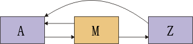

| 概念：开发人员测试 |
 |
|
| 相关元素 |
|---|
简介短语“开发人员测试”用来对最适合由软件开发人员执行的测试任务进行分类。它还包括由这些任务创建的工作产品。“开发人员测试”包含传统上在以下类别中考虑的工作：单元测试、大部分集成测试以及最经常所称的“系统测试”的某些方面。“开发人员测试”在传统上与“实施”规程中的任务相关，但它还与“分析和设计”规程中的任务有关。 以这种“整体”方式考虑“开发人员测试”，有助于在一定程度上降低传统上采用更加“原子化”的方法带来的风险。在“开发人员测试”的传统方法中，工作在最初时集中在评估所有单元是否独立工作上。在开发生命周期的晚期，由于开发工作接近完成，集成的单元会被汇集到工作子系统或系统中，并首次以这样的设置进行测试。 这种方法存在很多缺点。首先，由于它鼓励采用分阶段的方法来测试集成单元和以后的子系统，因此任何在这些测试中找出来的错误经常发现得太晚。这种过晚的发现通常会导致作出不采取更正措施的决定，或者它就要求大量的返工来加以更正。这样的返工昂贵而又阻碍其他方面的进度。这增大了项目出轨或被放弃的风险。 其次，在“单元”、“集成”和“系统测试”之间设立僵硬的界线会增大无法发现跨界线的错误的可能性。而当这些类型的测试的相应职责被分配给多个团队时，风险会进一步加大。 RUP 建议的开发人员测试风格是鼓励开发人员关注要在给定时间点执行的、最有价值和最适合的测试。甚至在单次迭代的范围内，让开发人员在他或她自己的代码中发现并更正尽可能多的缺陷，从而不会产生因转交给另外一个测试组而带来的额外开销，这样通常会更有效。期望的结果是，尽早发现最重大的软件错误，无论这些错误是在独立单元中、在单元的集成中还是在有意义的最终用户场景内的集成单元工作中。 开发人员测试起步时的缺陷许多开发人员在开始尝试执行实质性地更为彻底的测试作业之后，很快就会放弃。他们发现这似乎并不会带来价值。而且，一些开发人员在开发人员测试的开始时状况良好，但后面发现他们创建的测试套件无法保持下去而最终废弃了它。 此页面给出了一些指南，描述了如何跨越最初的关卡以及创建能避免可维护性陷阱的测试套件。关于更多信息，请参阅指南：维护自动测试套件。 设定期望有些人认为开发人员测试物有所值，就会执行这样的测试。而有些人却认为开发人员测试是闲杂琐事，就想方设法地避免它。这只不过是大多数行业中大多数开发人员的本性，但认为这样做既多余又不体面从来就没有得到好的结果。因此，作为开发人员，您应当期望测试物有所值，并执行让它物有所值而需要做的工作。 理想的开发人员测试会遵循非常严密的“编辑-测试”循环。您对产品做个小小的改动，例如向类添加新方法，然后立即重新运行测试。如果任何测试中断，您就可确切地知道是什么代码导致的。这种轻松、稳定的开发步调正是开发人员测试的最大回报。但长时间的调试会话应属于例外情况。 因为一个类中作出的改动导致另一个类中某些事物的中断这并不少见，所以您应当期望不只重新运行改动过的类的测试，而要重新运行很多的测试。理想情况下，您在每小时内要很多次为组件重新运行完整的测试套件。每当作出重大改动，您就要重新运行该套件，观察结果，然后选择继续下一个改动或者修正上一个改动。需要投入一定的努力使该快速反馈成为可能。 自动执行测试如果测试需要手动执行，那么经常性地运行测试就不合实际。对于某些组件，自动测试要简单些。例如内存数据库。它通过 API 与客户端通信，而与外界无任何其他接口。它的测试就与以下相似： /* Check that elements can be added at most once. */// SetupDatabase db = new Database(); 测试与普通的客户机代码相比只有一点不同：它们不是相信 API 调用的结果，而是检查这些结果。如果 API 使客户机代码易写，它也使测试代码易写。如果测试代码不易写，您在这之前就已经收到 API 需要改进的早期警告。测试优先设计这样与 Rational Unified Process 对早期处理重大风险的强调保持一致。 但是组件与外界连接得越紧密，要测试该组件就越困难。这有两种常见情况：图形用户界面和后端组件。 图形用户界面假设上述示例中的数据库通过回调从用户界面对象接收它的数据。当用户填写某些文本字段并按下按钮时，就会调用回调。您并不想在一个小时内很多次地手动填写字段并按下按钮来进行测试。您必须安排一种方法在有计划的控制下进行输入，一般通过以代码形式“按下”按钮。 按下按钮会执行组件中的某些代码。该代码很可能会更改某些用户界面对象的状态。因此，您还必须安排一种方法来有计划地查询那些对象。 后端组件假设测试中的组件不实施数据库。它其实是真实的磁盘数据库外的包装程序。 对该真实数据库的测试可能很困难。数据库可能难以安装和配置。它的许可证可能价格昂贵。数据库可能会大幅减缓测试，以至于您不想经常运行它们。在这些情况下，使用一个可恰好支持测试的、较为简单的组件来“以桩模块代表”数据库是值得的。 当您的组件要向某个组件传达信息而该组件还没有准备好时，桩模块同样有用。您不想让您的测试等待他人的代码。
关于更多信息，请参阅 不要编写您自己的工具开发人员测试看上去相当直接。您设置某些对象，通过 API 进行调用，检查结果，然后如果结果不合期望则宣布测试失败。采用某种方法将测试分组，从而可以分别运行或作为完整套件运行这些测试，这也是很方便的。支持这些需求的工具称为测试框架。 开发人员测试是直接的，并且测试框架的要求不复杂。但是，如果您试图编写自己的测试框架，您将花费比期望时间要多得多的时间来笨拙地修补框架。有许多现成提供的测试框架，它们有商业形式的也有使用开放式源代码的，您没有理由不从这些框架中选择一个。 切记创建支持代码测试代码倾向于具有重复性。经常可看到与以下相似的代码序列：
此代码的创建方法是复制并粘贴某检查，然后编辑它以创建另一个检查。 此处的危险是双重的。如果界面更改，则必须完成大量的编辑。（在更为复杂的情况下，简单的全局替换是不够的。）而如果代码过于复杂，您可能会在面对大量文本时打消测试的念头。 当您发现自己在重复时，请认真考虑将重复分出到支持代码中。即使上述代码是一个简单的示例，如果照下面编写，它也将更具可读性和可维护性：
开发人员编写测试时经常过度复制并粘贴。如果您怀疑自己也有这种倾向，那么有意识地反向矫正会有所帮助。决定从您的代码中除去所有重复的文本。 首先编写测试在代码之后编写测试是件烦琐的事情。因而迫切希望快速编写完然后继续下一步。在代码之前编写测试会使测试成为积极的反馈循环的一部分。随着您实施更多的代码，您会看到更多的测试顺利通过，直至最终所有测试都顺利通过，您的工作完全结束。首先编写测试的开发人员似乎更为成功，而且这无需花费更多的时间。关于首先编写测试的更多信息，请参阅概念：测试优先设计 保持测试可理解您应当预计您或其他人以后必须修改测试。一种通常的情况是以后的迭代要求更改组件行为。举一个简单的示例，假设组件曾经如下声明过平方根方法：
在该版本中，负实参使 sqrt 返回 NaN（IEEE 754-1985 二进制浮点运算标准中的“非数字”）。在新的迭代中，平方根方法将接受负数并返回复数结果：
sqrt 的旧测试将必须更改。这意味着需要了解旧测试做些什么并更新旧测试，从而使它们对于新的 sqrt 起作用。更新测试时，您必须小心，不能破坏测试的缺陷查找能力。一种有时发生的方式如下：
其他方式更为微妙：测试被更改后会实际运行，但是不再测试它们原先计划测试的内容。在经过很多迭代后的最终结果可能是功能太弱而无法捕获足够缺陷的测试套件。这有时称为“测试套件衰弱”。衰弱的套件因为不值得维护而会被放弃。 除非测试实施什么测试构想非常明确，否则您就无法维护测试的缺陷查找能力。测试代码倾向于被低估，即使它背后的“原因”通常比产品代码更难理解。 测试套件衰弱出现在 sqrt 的直接测试中比出现在间接测试中的概率要小。将有代码调用 sqrt。该代码将接受测试。当更改 sqrt 时，这些测试中的一些就会失败。更改 sqrt 的人就可能必须更改那些测试。因为他并不怎么熟悉那些测试，而且那些测试与更改之间的关系不够清楚，所以他很可能会在让那些测试顺利通过的过程中减弱它们。 当您为测试创建支持代码（如上面所迫切要求）时，请注意：支持代码应当清楚说明（毫不含糊）使用该支持代码的测试的目的。关于面向对象的程序的常见抱怨是没有一个地方可供完成所有事情。如果查看任何一种方法，您都会发现它将它的工作转到其他地方。 这样的结构有优点，但是它使新接触的人更难以理解代码。如果他们不作努力，他们的更改就可能不正确或使代码甚至变得更加复杂而脆弱。除了后面的维护人员更不大可能保持适当的注意之外，测试代码的其他情况同样如此。您必须编写可理解的测试以防止该问题的发生。 使测试结构与产品结构相匹配假设某人继承了您的组件。他们需要更改组件的某个部分。他们可能想要检查旧测试以帮助他们新的设计。他们想在编写代码之前更新旧测试（测试优先设计）。 如果他们找不到适当的测试，所有这些良好的意图就会被搁在一边。他们会做的就只是作出更改，观察什么测试失败，然后修正测试。这将导致测试套件衰弱。 出于这个原因，测试套件在结构组织上必须合理而且可以从产品结构预测测试位置，这就非常重要了。最常见的情况是开发人员按并行层次结构来安排测试，一个测试类对应一个产品类。这样如果某人更改名为 Log 的类，他们就知道测试类是 TestLog，并且知道可以在什么地方找到源文件。 让测试违反封装性您可能限制测试，使测试完全像客户机代码那样，通过与客户机代码使用的同一接口与您的组件交互。但是，这有缺点。假设您在测试某个维护双向链接列表的简单类：
图 1：双向链接列表 具体您在测试 DoublyLinkedList.insertBefore(Object existing, Object newObject) 方法。在您的一个测试中，您想要在列表中间插入一个元素，然后检查它是否被成功插入。该测试使用上述列表创建以下更新后的列表：
图 2：双向链接列表 － 插入项后 它如下检查列表是否正确： // the list is now one longer.expect(list.size()==3);// the new element is in the correct positionexpect(list.get(1)==m);// check that other elements are still there.expect(list.get(0)==a); expect(list.get(2)==z); 这似乎已足够，但其实不然。假设列表实施不正确而且反向指针未正确设置。即，假设更新后的列表实际上与以下相似：  图 3：双向链接列表 － 实施故障 如果 DoublyLinkedList.get(int index) 从头到尾地遍历列表（可能），该测试就会错过这个故障。如果该类提供 elementBefore 和 elementAfter 方法，查找这样的故障就很直接： // Check that links were all updatedexpect(list.elementAfter(a)==m);expect(list.elementAfter(m)==z);expect(list.elementBefore(z)==m);//this will failexpect(list.elementBefore(m)==a); 但是，如果它不提供那些方法，怎么办呢？您可以设计更精细的方法调用序列，这样如果存在可疑的缺陷，这些方法调用就会失败。例如，以下会起作用： // Check whether back-link from Z is correct.list.insertBefore(z, x);// If it was incorrectly not updated, X will have// been inserted just after A.expect(list.get(1)==m); 但是创建这样的测试需要更多工作而且可能非常难以维护。（除非您编写出详尽的注释，否则根本不会清楚测试为什么实施当前的行为。）有两种解决方法：
甚至对于像 DoublyLinkedList 这样的简单类，后者通常也是最佳解决方法，它还特别适用于产品中出现的更为复杂的类。 一般而言，测试会与它们要测试的类放在同一个包中。它们被授予受保护访问权限或友好访问权限。 特征性测试设计错误每个测试检验一个组件并检查正确结果。测试的设计（测试所使用的输入以及测试如何检查正确性）可能擅于揭示缺陷，也可能无意间隐藏了缺陷。下面是一些特征性测试设计错误。 未能预先指定期望结果假设您在测试将 XML 转换为 HTML 的组件。一些开发人员会冲动地调取某些样本 XML，使它运行完转换，然后在浏览器中查看结果。如果屏幕显示正确，则暗自庆幸，并将该 HTML 另存为正式的期望结果。然后，测试会将转换的实际输出与期望结果相比较。 这是一种危险的做法。即使老练的计算机用户也习惯于认为计算机所做的是正确。您可能会忽视屏幕上显示的错误。（更不要说浏览器可非常宽大地容许格式错误的 HTML。）将不正确的 HTML 当作正式的期望结果，会导致测试永远找不出问题。 如果直接查看 HTML 进行双重检查，危险性就会减少，但是仍然存在一定的危险。由于输出复杂，因此很容易忽视错误。如果首先手动编写期望输出，您会找出更多的缺陷。 未能检查后台测试通常会检查应更改的是否已被更改，但它们的创建者经常忘记检查不应更改的是否没有被更改。例如，假设某个程序要更改文件中的前 100 条记录。检查第 101 条记录未被更改，这是一个很好的做法。 理论上，您应检查“后台”（整个文件系统、所有内存、可从网络获得的所有相关事物）中无一被更改。实际上，您必须小心选择可负担起检查什么信息。但是作出这样的选择是很重要的。 未能检查持久性组件可能会告知您已作出更改，但这并不意味着更改已实际提交到数据库。您需要通过另一路径检查数据库。 未能补充多样性测试可设计为检查数据库记录中三个字段的影响，但是需要填入很多其他字段才能执行测试。测试员通常在这些“无关”字段中反复使用相同的值。例如，他们总是在文本字段中使用恋人的姓名，或在数字字段中使用 999。 问题是有时本不重要的东西实际上很重要。常常会出现由于不太可能的输入的某些模糊组合而导致的错误。如果始终使用相同的输入，您就没有机会找出这样的错误。如果您坚持使用变化的输入，就有可能找出。而通常，使用不同于 999 的数字或使用其他人的姓名并不是件困难的事。如果改变在测试中使用的值并不困难而且这有某些潜在的好处，那么就应改变这些值。（注意：如果您目前的恋人与您一起工作，那么使用前恋人的姓名而非目前恋人的姓名是不明智的做法。） 以下是另一好处。一个似乎可能的错误是：在程序应使用字段 Y 时却让程序使用 X。如果两个字段都包含“Dawn”，则无法检测到该错误。 未能使用实际数据在测试中使用虚构的数据，这很常见。该数据经常是不切实际地简单。例如，客户姓名可能是“Mickey”、“Snoopy”和“Donald”。由于该数据与实际用户输入的数据不同（例如，该数据的特点是比较短），因此它可能会错过实际客户看到的缺陷。例如，这些一个单词的名称无法检测到代码不处理包含空格的姓名。 多做一点额外的工作，使用实际数据，这是一种谨慎的做法。 未注意到代码根本不执行任何操作假设初始化数据库记录，使记录为零；接着运行计算，其结果应为零且该结果被存储在记录中；然后检查该记录是否为零。您的测试证明了什么？计算可能根本没有执行过。可能没有存储任何结果，而测试无法反映出来。 这个示例听起来似乎不可能。但是与这相同的错误可能以更微妙的方式突然出现。例如，为复杂的安装程序编写测试。测试意在检查：成功安装后，所有的临时文件均被除去。但在该测试中，由于所有安装程序选项的原因，某个特定的临时文件并未创建。毫无疑问，这是程序忘记除去的文件。 未注意到代码操作错误有时程序会出于错误的原因却做出正确的结果。举一个很小的示例，请考虑以下代码： if (a < b && c) 逻辑表达式错误，并且您编写了测试，导致它错误求值，结果选用错误的分支。不幸的是，纯属巧合，在该测试中变量 X 的值为 2。这样，错误的分支意外地有正确的结果（与正确分支得出的结果相同）。 对于每个期望的结果，您都应考虑是否有某种想象存在的方式使这个结果可从错误的原因得出。虽然它经常不可能被人知道，但是有时也并非如此。 |

© Copyright IBM Corp. 1987, 2006. All Rights Reserved. |